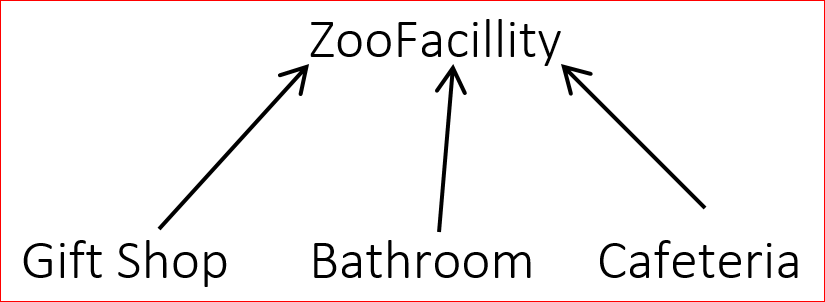
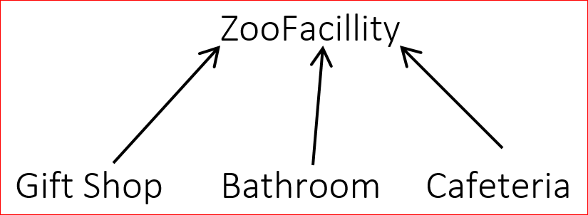

Lesson 6.05 — Has-a Relationships
====================================================================================================
Overview
--------
### Objectives — _Students will be able to…_
- **Identify and explain** why two classes have an is-a or a has-a relationship.
- **Create** a has-a relationship between two classes
### Assessments — _Students will…_
- **Complete** an AP Section II question “Trio”
### Homework — _Students will…_
- **Read** BJP 9.5
Materials & Prep
----------------
- **Projector and computer** (if you are able to/opt to use Eclipse with your students)
- **Whiteboard and** **markers**
- **Projection or classroom copies** of [WS 6.5] (an AP Section II question)
- **Student pair assignments**
- **Video for hook:**
Pacing Guide
------------
| Section | Total Time |
|----------------------------------|-----------:|
| Bell-work and attendance | 5min |
| Introduction (with pair work) | 15min |
| Student practice | 25min |
| Student share/whole group review | 10min |
Procedure
---------
Hook your class today with the Shapeshifter video (link in “Materials & Prep”). Ask students what
the different animals had in common in the video, and what real animals have in common. What
behaviors did the animals have in common? What was a behavior that stuck out as unique to each
animal? The idea here is to get students thinking about how to use inheritance (and eventually
polymorphism) to reuse code for different classes.
### Bell-work and Attendance \[5 minutes\]
### Introduction (with pair work) \[15 minutes\]
1. Continue the class discussion by prompting students to pair up and draw out a class hierarchy
including: *Animal*, *Carnivore*, *Tiger*, and *Donkey*.
2. After students have created the hierarchy, ask them to consider some behaviors that would also
apply to the classes *Zoo* and *Zookeeper*. Students should share these behaviors and jot them
down in their notebooks for later reference.
3. Using student-generated examples, illustrate the *is-a* relationships, and areas where you might
include *has-a* relationships:
- An **_is-a_** describes inheritance between a subclass and a superclass. The superclass inherits
all the code from the superclass because you can think of it as a subset of the superclass.
(Hopefully a student can volunteer an answer like this.)
 - Have students create class hierarchies for ZooStaff and ZooFacilities. (Some staff titles could
be zookeeper, customer service representative, or trainer. Typical zoo facilities include
bathrooms, gift shops, and cafeterias.)
- Have students create class hierarchies for ZooStaff and ZooFacilities. (Some staff titles could
be zookeeper, customer service representative, or trainer. Typical zoo facilities include
bathrooms, gift shops, and cafeterias.)
 
- **_Has-a_** describes the relationship between a class that is client code of another class.
The class is a component of the “client class,” and one object *contains* the other. To create
a *has-a* relationship, write a field in the class that refers to the other class:
``` Java
public class Zoo {
private Animal [] animals;
private ZooMember [] zooMembers;
private ZooFacility [] zooFacilities;
…
```
- We create fields that refer to other classes (highlighted) to create a *has-a* relationship.
When you can’t substitute one class for another, you should use a has-a relationship. A zoo is
not an animal (or array of animals), nor is it a staff member (or array of staff members). A
zoo contains, or *has*, all of these components.
### Student Practice \[25 minutes\]
1. Students should remain in their student pairs. If your classroom has computers, students should
complete the following exercise in Eclipse, and you should review the protocol for submitting
assignments electronically.
2. Before students get started, ask students what types of meals they see in fast food restaurants,
and what options are typically bundled together. Guide students to discuss:
1. Sandwiches: chicken, burger, fish
2. Drinks: soda, water, juice, coffee, milk
3. Sides: French fries, onion rings, tatertots, salad, apple slices
In the examples here, ChickenSandwich, BurgerSandwich, FishSandwich, SodaDrink (_etc._) are
subclasses. A very rich class hierarchy can be formed here! Explain to students that they’re
going to generate complex code that uses inheritance and polymorphism to model the state and
behavior of *ValueMeals*.
3. On the projector, whiteboard, or as a handout, give students the 2014 AP exam Section II question
4 problem “Trio.” A copy of this problem has been included in your materials as WS 6.5.
4. Give students ≈20 minutes to write and debug their sample code. Walk around the room checking on
students and offering guidance if they are stuck or on the wrong path. Choose one or two student
pairs to share their code with the class during whole-group discussion, and help those students
save and transfer their files to the projecting computer.
### Student Share/Whole Group Review \[10 minutes\]
In a whole group, ask for students to share their code and explain how the established the *has-a*
relationship between classes. Check for student understanding by asking why a has-a relationship was
more appropriate than creating a *is-a (*hierarchical) relationship.
Accommodation and Differentiation
---------------------------------
### Common Questions/Issues
- You may have to remind students to write toString methods in the other classes as well. Have
students demonstrate flow of control on the toString method to demonstrate why a toString method
in the “client class” will require a toString method in the other classes.
- Check to make sure students are using private fields. If you’re seeing many students using public
fields, pause the class to lead a whole group discussion about why encapsulation is so important.
(The Y2K bug is a particularly exciting example of what happens when we don’t encapsulate code. Be
sure to describe the panic and doomsday predictions that this caused!)
- If your students have been having trouble tracing the flow of control as a method calls another
method in a different class, take some time to demonstrate how to use the step-into and step-over
buttons in Eclipse.
- The step-over and step-into buttons can be found in the top toolbar.
- In the screenshot below, the pointer rests on the step-into button, which will advance the flow
of control one step at a time. The step-over button will jump to the end location of control
once the entire method has executed.

- **_Has-a_** describes the relationship between a class that is client code of another class.
The class is a component of the “client class,” and one object *contains* the other. To create
a *has-a* relationship, write a field in the class that refers to the other class:
``` Java
public class Zoo {
private Animal [] animals;
private ZooMember [] zooMembers;
private ZooFacility [] zooFacilities;
…
```
- We create fields that refer to other classes (highlighted) to create a *has-a* relationship.
When you can’t substitute one class for another, you should use a has-a relationship. A zoo is
not an animal (or array of animals), nor is it a staff member (or array of staff members). A
zoo contains, or *has*, all of these components.
### Student Practice \[25 minutes\]
1. Students should remain in their student pairs. If your classroom has computers, students should
complete the following exercise in Eclipse, and you should review the protocol for submitting
assignments electronically.
2. Before students get started, ask students what types of meals they see in fast food restaurants,
and what options are typically bundled together. Guide students to discuss:
1. Sandwiches: chicken, burger, fish
2. Drinks: soda, water, juice, coffee, milk
3. Sides: French fries, onion rings, tatertots, salad, apple slices
In the examples here, ChickenSandwich, BurgerSandwich, FishSandwich, SodaDrink (_etc._) are
subclasses. A very rich class hierarchy can be formed here! Explain to students that they’re
going to generate complex code that uses inheritance and polymorphism to model the state and
behavior of *ValueMeals*.
3. On the projector, whiteboard, or as a handout, give students the 2014 AP exam Section II question
4 problem “Trio.” A copy of this problem has been included in your materials as WS 6.5.
4. Give students ≈20 minutes to write and debug their sample code. Walk around the room checking on
students and offering guidance if they are stuck or on the wrong path. Choose one or two student
pairs to share their code with the class during whole-group discussion, and help those students
save and transfer their files to the projecting computer.
### Student Share/Whole Group Review \[10 minutes\]
In a whole group, ask for students to share their code and explain how the established the *has-a*
relationship between classes. Check for student understanding by asking why a has-a relationship was
more appropriate than creating a *is-a (*hierarchical) relationship.
Accommodation and Differentiation
---------------------------------
### Common Questions/Issues
- You may have to remind students to write toString methods in the other classes as well. Have
students demonstrate flow of control on the toString method to demonstrate why a toString method
in the “client class” will require a toString method in the other classes.
- Check to make sure students are using private fields. If you’re seeing many students using public
fields, pause the class to lead a whole group discussion about why encapsulation is so important.
(The Y2K bug is a particularly exciting example of what happens when we don’t encapsulate code. Be
sure to describe the panic and doomsday predictions that this caused!)
- If your students have been having trouble tracing the flow of control as a method calls another
method in a different class, take some time to demonstrate how to use the step-into and step-over
buttons in Eclipse.
- The step-over and step-into buttons can be found in the top toolbar.
- In the screenshot below, the pointer rests on the step-into button, which will advance the flow
of control one step at a time. The step-over button will jump to the end location of control
once the entire method has executed.
 If students complete this assignment quickly, encourage them to increase the complexity and depth of
the program. Some ideas to get students started:
- Introduce an `Aquarium` class with associated *has-a* and *is-a* relationships to some of the
classes you already created.
- Create additional subclasses in `Animal`, or classes such as `AquariumStaff` as needed.
If you’d like for students to expand on the AP question given, have students:
- Create additional subclasses for Drink/Sandwich/Salad (if not already done)
- Create a Menu of ValueMeal options, and allow user to select the options they want to create a
meal
- Add serving sizes to Drink and Side, and create a SuperSizeValueMeal
- Add price to Sandwich/Drink/Salad and have ValueMeal prices be 85% of the total item prices.
If students are struggling with the assignment, allow more time (up to two class periods) to
complete the lesson. Read the prompt aloud for the class, and do the steps together if needed. In
classes with ELLs, you can distribute saved Eclipse files that contain an entire functional program,
with shuffled components. Students will need to organize the code fragments into the proper order (a
Parsons problem).
Teacher Prior CS Knowledge
--------------------------
_Is-a_ relationships define class hierarchy through inheritance, while _has-a_ relationships define
classes through the incorporation of component classes.
Misconceptions
--------------
_Has-a_ implies a one-to-one relationship, while in many cases, classes have a one-to-many
relationship. Use examples where the _has-a_ (composition) relationship is more than just a
1∶1 relationship. For example, a deck of cards has 52 cards.
Forum discussion
----------------
[Lesson 6.05 Has-a Relationships (TEALS Discourse account required)](http://forums.tealsk12.org/c/unit-6/6-05-has-a-relationships)
[WS 6.5]: https://raw.githubusercontent.com/TEALSK12/apcsa-public/master/curriculum/Unit6/WS%206.5.docx
If students complete this assignment quickly, encourage them to increase the complexity and depth of
the program. Some ideas to get students started:
- Introduce an `Aquarium` class with associated *has-a* and *is-a* relationships to some of the
classes you already created.
- Create additional subclasses in `Animal`, or classes such as `AquariumStaff` as needed.
If you’d like for students to expand on the AP question given, have students:
- Create additional subclasses for Drink/Sandwich/Salad (if not already done)
- Create a Menu of ValueMeal options, and allow user to select the options they want to create a
meal
- Add serving sizes to Drink and Side, and create a SuperSizeValueMeal
- Add price to Sandwich/Drink/Salad and have ValueMeal prices be 85% of the total item prices.
If students are struggling with the assignment, allow more time (up to two class periods) to
complete the lesson. Read the prompt aloud for the class, and do the steps together if needed. In
classes with ELLs, you can distribute saved Eclipse files that contain an entire functional program,
with shuffled components. Students will need to organize the code fragments into the proper order (a
Parsons problem).
Teacher Prior CS Knowledge
--------------------------
_Is-a_ relationships define class hierarchy through inheritance, while _has-a_ relationships define
classes through the incorporation of component classes.
Misconceptions
--------------
_Has-a_ implies a one-to-one relationship, while in many cases, classes have a one-to-many
relationship. Use examples where the _has-a_ (composition) relationship is more than just a
1∶1 relationship. For example, a deck of cards has 52 cards.
Forum discussion
----------------
[Lesson 6.05 Has-a Relationships (TEALS Discourse account required)](http://forums.tealsk12.org/c/unit-6/6-05-has-a-relationships)
[WS 6.5]: https://raw.githubusercontent.com/TEALSK12/apcsa-public/master/curriculum/Unit6/WS%206.5.docx